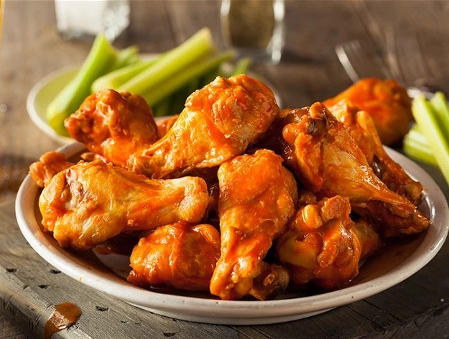

Buffalo Chicken Wings

Description
This is the similar to the hot wings recipe served at a popular restaurant chain.
Our healthier version features less butter and no frying!
Ingredients
- 1/2 cup all-purpose flour
- 1/4 teaspoon paprika
- 1/4 teaspoon cayenne pepper
- 1/4 teaspoon salt
- 10 chicken wings
- 2 tablespoons butter
- 1/4 cup hot sauce
- 1 clove garlic, minced
- 1 dash ground black pepper
Steps
- Mix together flour, paprika, cayenne pepper, and salt in a small bowl.
Place chicken wings in a large dish and sprinkle flour mixture over them until well
coated. Place on baking sheet and refrigerate for 1 hour, uncovered.
- Preheat oven to 400 degrees Fahrenheit.
- Bake wings in preheated oven until no longer pink at the bone and juices run clear,
about 15 minutes per side.
- Combine butter, hot sauce, pepper, and garlic in a small saucepan over low heat.
Cook and stir until butter is melted and mixture is well blended, about 3 minutes.
Place chicken wings in serving bowl and add hot sauce mixture, mixing well.
Home